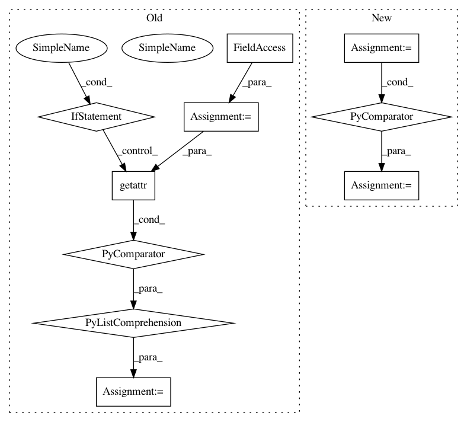

76b2432b1c1ee03c80895a5c7d49cde485323102,qucumber/nn_states/complex_wavefunction.py,ComplexWaveFunction,rotated_gradient,#ComplexWaveFunction#Any#Any#Any#,163
Before Change
of the amplitude and phase RBMS
:rtype: list[torch.Tensor, torch.Tensor]
rotated_grad = [
torch.zeros(
2, getattr(self, net).num_pars, dtype=torch.double, device=self.device
)
for net in self.networks
]
Upsi, Upsi_v, v = unitaries.rotate_psi_inner_prod(
self, basis, sample, include_extras=True
)
After Change
)
vr = v.reshape(-1, v.shape[-1])
raw_grads = [
self.am_grads(vr).reshape(2, *v.shape[:-1], -1),
self.ph_grads(vr).reshape(2, *v.shape[:-1], -1),
]
rotated_grad = [cplx.einsum("s...,s...g->...g", Upsi_v, g) for g in raw_grads]
grad = [
cplx.real(cplx.scalar_divide(rotated_grad[0], Upsi)),
cplx.real(cplx.scalar_divide(rotated_grad[1], Upsi)),
In pattern: SUPERPATTERN
Frequency: 3
Non-data size: 10
Instances
Project Name: PIQuIL/QuCumber
Commit Name: 76b2432b1c1ee03c80895a5c7d49cde485323102
Time: 2019-12-22
Author: emerali@users.noreply.github.com
File Name: qucumber/nn_states/complex_wavefunction.py
Class Name: ComplexWaveFunction
Method Name: rotated_gradient
Project Name: jonathf/chaospy
Commit Name: 6104a380659b1e3b3aa7884b7bb770e5f035f779
Time: 2018-12-14
Author: jonathf@gmail.com
File Name: tests/test_dist.py
Class Name:
Method Name:
Project Name: PIQuIL/QuCumber
Commit Name: 76b2432b1c1ee03c80895a5c7d49cde485323102
Time: 2019-12-22
Author: emerali@users.noreply.github.com
File Name: qucumber/nn_states/density_matrix.py
Class Name: DensityMatrix
Method Name: rotated_gradient